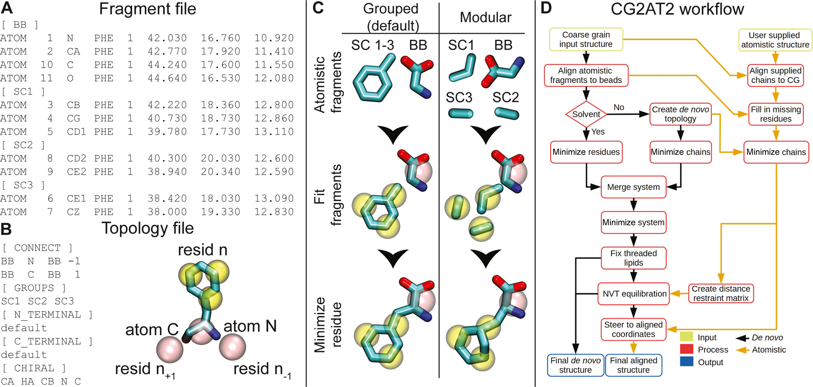
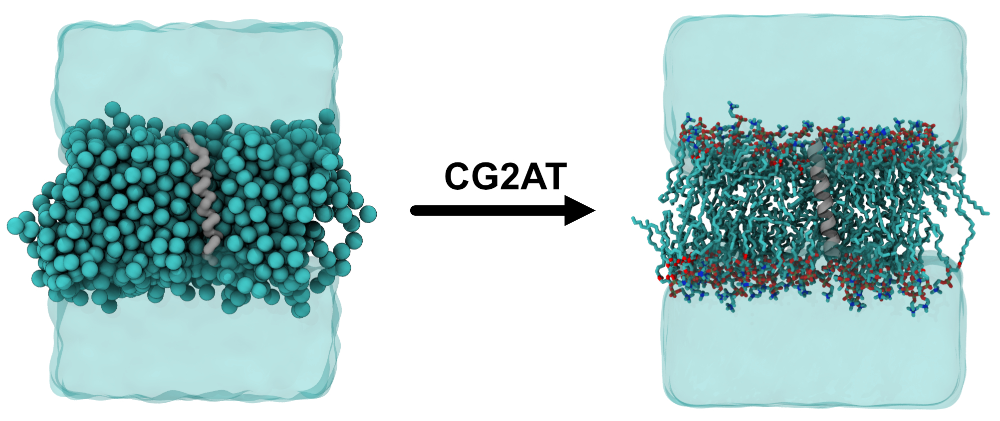

Backmapping systems with CG2AT
Tutorial composed by C.M. Brown with inspiration from the original GitHub page by P.J. Stansfeld and O.N. Vickery, and the help of A.H. de Vries.
In case of issues, please contact c.m.brown@rug.nlTable of Contents
Introduction
As explained in the backward tutorial, to convert a coarse-grained (CG) structure to an atomistic (AT) level of detail, knowledge of the arrangements of atoms that correspond to the particle is needed. CG2AT[1] is one such programme that does that using a fragment-based methodology that contains all the chemical and stereochemical information required to assemble the system. To improve the protein output, optionally an atomistic structure for the protein within the system can be provided, which CG2AT steers the de novo structure (that produced from just the CG information) to fit to, often improving the secondary structure (see Figure 1). At the end of the workflow, the user will have the necessary files to launch an AT simulation with gromacs.

Figure 1: The CG2AT workflow. (A) Fragment file for phenylalanine. Each fragment has a header containing the corresponding CG bead name, for example, backbone [BB], side chain [SC1], and so on, followed by the atoms within the fragment. If the molecule is not processed by pdb2gmx, then the atom numbers should match the supplied topology itp file. (B) Topology file for phenylalanine. There are six sections within the topology file: CONNECT details the connectivity of the backbone and should follow a four-column convention: bead name, associated atom name, connected bead name, and numeric direction of the connected bead. GROUPS contain the fragment groupings, as shown in the (C) “Grouped” section. N_TERMINAL and C_TERMINAL contain any non-standard atomistic termini for the residue. CHIRAL contains any stereochemistry information present within the residue. This is described in the column format: central atom, atom to move, atom 1, atom 2, and atom 3. (C) Graphical depiction of the grouped (left) and modular (right) methodologies implemented within CG2AT, where atomistic fragments are either grouped and aligned with their CG beads or aligned individually in a modular fashion. (D) Description of the conversion of CG to AT. Initially, CG2AT converts the CG system in a de novo manner from the fragments supplied. If an atomistic protein structure is provided, this structure is aligned with the CG coordinates, with the de novo protein coordinates steered to the aligned protein coordinates to remove clashes with surrounding atoms, for example, lipids. Figure and caption taken from Vickery & Stansfeld, 2021[1].
Overview and Required Tools
Requirements
Software
- Python v3 or higher
- GROMACS > v5
Non-standard python modules
- Numpy
- Scipy
CG2AT does not require compilation and can be downloaded from GitHub or Zenodo, which is ready to use. However, it can also be installed via the command line. This can be achieved using:
pip3 install cg2atOr
conda install -c stansfeld_rg cg2atThe addition of CG2AT to the system PATH will make using the programme easier. To do this, in either your .profile, .bashrc or .zshrc file, you can add the following line:
export PATH="path_to_CG2AT2:$PATH"where path_to_CG2AT2 is replaced with the installation path for CG2AT. This will enable you to run the commands as shown in the tutorial.
Tutorial
In theory, CG2AT can convert between a large range of force fields and their iterations (see the GitHub page and publication[1] for more information) to others, but in this tutorial, the focus will be on the charmm36m atomistic force field and Martini 3.
The outputs from the Proteins IIa KALP tutorial will be used, and all of the files for this tutorial can be downloaded here.
tar -xzf tutorial_files.tar.gz
cd tutorial_filesTo make the conversion from CG to AT (assuming that the fragments are present within CG2AT), all that is needed as input is the CG coordinate file. An additional file of the AT protein structure can be provided to obtain an aligned file (see Figure 1).
From the downloaded files, we will use the final frame of the simulation, dynamic.gro and the initial KALP structure, kalp-AA.pdb. We are then ready to perform the CG2AT conversion using the following command:
cg2at -c dynamic.gro -a kalp-AA.pdb -ff charmm36-jul2020-updated \
-fg martini_3-0_charmm36 -w tip3pThe -c flag is for the CG coordinates, -a is for the AT protein structure, -ff will select the atomistic force field to map to, -fg will select the coarse-grained forcefield the supplied file is in and -w will select the water model to use in the AT system.
The command used can be simplified to
cg2at -c dynamic.gro which will prompt selection of the force fields and water model, and only provide the de novo protein structure.
The script will run through the following steps before producing the final atomistic system (which can be seen in Figure 1D):
- Initialisation
- Read in CG system
- Build protein systems
- Build non-protein system
- Merge and minimise de novo
- NVT on de novo
- Creating aligned system
Depending on the size of your system, this command can take a while to complete, but should be relatively quick for this example. It will produce a file called CG2AT_date_time in your working directory. This contains multiple sub-folders for the different mapping and minimisation steps.
If the programme fails, in each folder (and any sub-folders) the gromacs-outputs file will record if there are any warnings/errors.
The folder of the most interest is the FINAL folder, which contains the final_cg2at_aligned.pdb (and the de novo version), the .ff folder, relevant .itp files (including position restraint files) and the topology file topol_final.top. Additionally, within this folder, the script_timings.dat will provide information about how long each step takes. We can look at the final structure:
cd CG2AT_date_time/FINAL/
vmd final_cg2at_aligned.pdbThe system should look like that on the right in Figure 2 after adjusting the visualisation selections.
 Figure 2: Visualisation of the CG and AT systems. The left shows a cut-through of the CG KALP system embedded in a POPC bilayer, with the protein shown as the grey surface, lipids as spheres and solvent as a transparent blue surface. The right shows the AT conversion, with the protein shown as a cartoon, lipids and sticks (with hydrogens hidden for clarity) and solvent as a transparent blue surface.
The atomistic system is now ready to simulate. Still working within the FINAL folder, we can perform an energy minimisation, an equilibration with position restraints and finally a short production run. The .mdp files are modified from Justin Lemkul’s gromacs tutorials[2], which are a fantastic resource for an introduction to atomistic molecular dynamics simulations. For our system, we can run:
#First energy minimisation
gmx grompp -f ../../mdp_files/em.mdp -c final_cg2at_aligned.pdb -p topol_final.top -o em.tpr
gmx mdrun -deffnm em -v -nt 4
#Now an equilibration step with position restraints
gmx grompp -f ../../mdp_files/eq.mdp -c em.gro -r em.gro -p topol_final.top -o eq.tpr
gmx mdrun -deffnm eq -v -nt 4
#A short production run
gmx grompp -f ../../mdp_files/md.mdp -c eq.gro -p topol_final.top -o md.tpr
gmx mdrun -deffnm md -v -nt 4This is not intended to be a guide to the best practices for atomistic simulations, but an idea of how the outputs from CG2AT can be used. Please see Justin Lemkul’s gromacs tutorials[2] as a more comprehensive guide.
On a decent workstation, this simulation will take ~15 minutes to run, but it is for illustration purposes only. The simulation time can be shortened by reducing the number of steps in the md.mdp file. The simulation can be visualised using:
vmd md.gro md.xtcTo improve visualisation, the perodic issues can be fixed using the following commands (for example, but there are many ways to do this):
gmx trjconv -f md.xtc -s md.tpr -pbc whole -center -o md_whole.xtc # then select protein
vmd md.gro md_whole.xtcHope you enjoy converting your CG systems!
Troubleshooting
To try and solve any issues, the best port of call is the GitHub page for further guidance, but some issues are discussed here.
Fragment is not in the database
One of the most common errors is that a fragment is not part of the database. There are multiple things to check:
The first thing to check is that you are selecting the correct CG force field with the
CG2ATcommand.Next, you can check the fragments that are present in the database. These can be found in the
CG2ATinstallation, or by looking on the GitHub page. The (non-protein or solvent) fragments (for martini_3-0_charmm36, for example) will be found incg2at/database/fragments/martini_3-0_charmm36/non_protein. The residue name needs to match exactly for this to be recognised byCG2AT.If the fragment is not in the database, new fragments can be added by the user, which is useful for small molecules or less commonly encountered lipids, for example. The files needed to add a molecule/fragment to the database are:
FRAG.pdb(specific format, see below)FRAG.itp(standard atomistic .itp file for the specified force field)FRAG_posre.itp(position restraint file for the non-hydrogen atoms of the fragment)FRAG.topoptional (contains the information about grouping, connectivity and chirality). A small example can be seen in Figure 1B.
The supplied .pdb file contains information about which atoms belong to which particles, and the atomistic relative position in space. The format for the atomistic part is a standard .pdb style. For example, this small molecule called 4HPA, which you can see below. This shows that atoms 1,2 and 18 belong to the BB bead etc. It is important all atoms are listed, including hydrogens.
[ BB ]
ATOM 1 OA1 4HPA 1 -0.810 -2.200 1.420 1.00 0.00
ATOM 2 CA 4HPA 1 0.610 -2.080 1.130 1.00 0.00
ATOM 18 OA2 4HPA 1 1.440 -2.790 2.170 1.00 0.00
[ SC1 ]
ATOM 3 CB 4HPA 1 1.050 -0.590 1.100 1.00 0.00
ATOM 4 HB1 4HPA 1 0.850 -0.190 1.990 1.00 0.00
ATOM 5 HB2 4HPA 1 2.040 -0.560 0.930 1.00 0.00
ATOM 6 CG 4HPA 1 0.390 0.300 0.040 1.00 0.00
[ SC2 ]
ATOM 7 CD1 4HPA 1 0.810 0.250 -1.300 1.00 0.00
ATOM 8 HD1 4HPA 1 1.550 -0.360 -1.560 1.00 0.00
ATOM 9 CE1 4HPA 1 0.190 1.060 -2.250 1.00 0.00
ATOM 10 HE1 4HPA 1 0.490 1.020 -3.200 1.00 0.00
[ SC4 ]
ATOM 11 CZ 4HPA 1 -0.850 1.910 -1.880 1.00 0.00
ATOM 12 OH 4HPA 1 -1.450 2.700 -2.820 1.00 0.00
ATOM 13 HH 4HPA 1 -2.170 3.240 -2.380 1.00 0.00
[ SC3 ]
ATOM 14 CD2 4HPA 1 -0.650 1.160 0.410 1.00 0.00
ATOM 15 HD2 4HPA 1 -0.950 1.200 1.360 1.00 0.00
ATOM 16 CE2 4HPA 1 -1.260 1.970 -0.550 1.00 0.00
ATOM 17 HE2 4HPA 1 -2.010 2.580 -0.280 1.00 0.00 These files would then be added to a folder with the name of your fragment (i.e. FRAG) in the cg2at/database/fragments/martini_3-0_charmm36/non_protein folder. When you run CG2AT again, the warning should be gone.
Currently, the most recent Martini 3 lipidome lipids are not included in the database, so it would require manual inclusion by the user. The Martini 3 lipids released with the initial force field are included.
Issue finding information for residue: CYSD
This is an issue with some combinations of selected force fields. It originates from a mismatch in the naming with the deprotonated CYS and those present in the selectedaminoacids.rtp. The combination used in the tutorial can bypass this issue, but it is intended to be fixed overall.
CUDA error
Occasionally, you could get something similar to a CUDA error. The flag-ncpus can change the number of cores it utilises.
References
[1] Vickery, O. N., & Stansfeld, P. J. (2021). CG2AT2: an enhanced fragment-based approach for serial multi-scale molecular dynamics simulations. Journal of chemical theory and computation, 17(10), 6472-6482.
[2] Lemkul J.A. (2018). From Proteins to Perturbed Hamiltonians: A Suite of Tutorials for the GROMACS-2018 Molecular Simulation Package, v1.0. Living J. Comp. Mol. Sci. 1, (1): 5068.